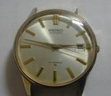

7/31 (Tue)
-
[phys]共同研究者と議論
- ボスは多忙のため欠席。
- こっちの進捗状況と、あちらのプラン、質問など。
- こっちサイドは順調とは言いがたいが前進はしているので、
気を引き締めていこう。
- 最近のネタで
DFD
(〆切が目前) に出したいなと思ったが、
全権限はボスが握ってるそうなので、メールしておく。
- 付記：翌日、ボスがやってきた。答えはノー。現時点で結果がない
(と彼の目には映ってる)ことと、財政的な問題。金回りの話は何故か全く蚊帳の外なので、
そう言われるとこちらには対処のしようもない。粛々と仕事をしていこう。
- 2007/11/17:
もうすぐ DFD が始まる。
- [phys]twobody
- slip の厳密解
- Lamb の一般解の検証、続き。
- XA での検証の続き。
- ２体の no-slip, perfect-slip, 一方が no-slip でもう一方が perfect-slip
まで確認。ここまでノート(lamb.tex)にまとめる。
7/30 (Mon)
- [phys]twobody
- slip の厳密解
- Lamb の一般解の検証、続き。
- 週末の計算をノートにまとめる(lamb.tex)。
- ２体のチェックに進む。凄く苦労したが、やっと出来た。
問題は係数計算ではなくて、それから速度場を求める(テストのための)codeにあった。
右手系と左手系が混在していて、混乱した。
- とりあえず XA の no-slip は確認。
- 帰ったら、久しぶりに時計が届いていた。
- yet another 4006 from US.
今度の奴は一通り揃っている不動品
(stem とか crown とか pusher が無いというようなことはない、の意)。
dial はそれなりにきれいだが、 SEIKO の emblem が歪んでる(何したんだろう？)。
7/29 (Sun)
- [phys]twobody
- slip の厳密解
- Lamb の一般解の検証、続き。
- 式を何度も紙の上で検算。
１体問題の具体的な答えも、手で書き出してみる。
正しい。
- code の方で、項を一つ一つチェック。
で、今回書いた係数処理 routines が bug っていた。
(だから、きちんと動く code を再利用する方がよいのだ……)
- １体レベルで、F, T 問題は確認済み(S はまだ)。
7/28 (Sat)
- [phys]twobody
- slip の厳密解
- Lamb の一般解の検証。
- まず極座標成分で速度場を紙の上に書く。
そして、C で書く。
- 係数は昔書いた JHU のコードを再利用したかったが、
時間がもったいないので、また scratch から書いた。
- まず１体。だが何かおかしい。
- lubrication-RG
- 古い folder から、その昔勉強した RG の論文群を更に発掘しておく。
7/27 (Fri)
-
[phys]twobody
- slip の厳密解
- lubrication
- Veysey-Goldenfeld (2007) から、関連しそうな論文をいくつか取って来る。
- 係数計算 code に間違い発見(maxima, C とも)。
- 急に全てが怪しく見えて来たので、きちんとした検証を今のレベルでしておく。
- Lamb の一般解の係数から速度場を計算する一般的な code を書く(Cで)。
まだ途中。
- 8/1/2007:
C への修正が不十分であった。
- working directory の整理。
- TWO の下に slip 関連を置いておいたが、
TWO-SLIP を作って格上げ。
7/26 (Thu)
-
大信田さんからメールが来た。
- 彼の企画した仮想研究会「塑性という名の動的機構」という
「物性研究」
での文章が添付されていた。講演者には見覚えのある名前が並んでる。
その昔、「粉体」という、物理に於いては新しい、従ってまだエライ人とか居なかった
subject の周辺に集まった人達の一部。
理論系物理屋は、表面的にどう振舞おうと、基本的に一匹狼だと思うけど、
まぁ何にでも分布や平均ってものはある。
その人達の今の重心(の一つ)がガラスということなのかな。
とは言え、こんなものは表面的に過ぎず、
各人の motivation はきっと昔から同じなんだろう。
これが研究者というものなんだろう、きっと。
"slow science" というのは、
なかなか良いキャッチ・フレーズではないか(今、作った)。
"slow food" とか "slow life" とか、
もうとっくに死語かもしれないが、そんなことを気にするようでは
この slow world は生きていけない。
- 4/27/2006:
Ooshida T. さんの論文。
-
[phys]twobody
- slip の厳密解
- C 版を開始。
- maxima は遅くてかつ低次で止まるので、
数値的に lubrication の捻出が不可能なため。
- 最初、 PARI/GP
で組み直してみたが、速度は体感的には変わらず
(コンパイラは試してない)。
- なので、結局 C 。それでも最初 GMP を考えたが、多項式を目の前に断念。
- ってことで、普通に浮動少数点。ついでに気になってた long double 版も書いてみた。
- FreeBSD は
何か変態なこと
になっているようで、
fpsetprec() で明示的に仮数部を 64 bit に指定する必要がある。
あとpowl()が見つからず、もう面倒なので、自分で普通に書いた、
どうせ整数しか引き数とらないし。
- 速度は、しかし期待した程、速くない……
メモリー不足で止まらないのが advantage か。
- 簡単な cache も付けた。実計算では効果ないが、再計算が楽になる。
- lubrication
- 何気なく Rev.Mod.Phys.
見てたら Goldenfeld の review を見つける。
彼が何で stokes flow? と思ったら、(その昔、近所で少し流行ってた)例の
RG のテクニックを stokes flow に使ってみた、という話らしい。
- 寝る前に横になって斜め読みしたところ、
stokes じゃなくて、 stokes 近似の有限 Re への展開の話。
例の Proudman-Peason 辺りの話。
technical には流体で一つの潮流をなす boundary layer とかの
matched asymptotics の話
(なので、 lubrication theory には実はもろにかぶってくる話)。
7/25 (Wed)
-
早寝早起きを試みる。
- まぁいつも言ってる(だけ？)。
- 昨夜は１０時半ごろ就寝して、今朝は８時に起きた(ベッドを出た)。
ニワトリと卵ではないが、今回は「早寝」にポイントを置いてみる。
さて、どうなりますか。
- 8/7/2007:
早起き、継続中。
-
[phys]twobody
- slip の厳密解
- 昨日までの結果を文章化(texノートにまとめ)。
散乱しつつあるノート群を整理、統廃合。
- maxima の code の改訂。
E 問題の初期条件を正しくする。
これで再計算中(結局、終わらず。)
- しかし、厳密解はこの漸化式で終わりではなくて、
次に lubrication theory が控えている……
発掘してきた論文を、まずは眺める。
7/24 (Tue)
- [phys]インフォーマル・セミナー
- ボスと共同研究者を前に、私の進捗状況などを説明。
- というか、あちらの頭の中にあるモヤモヤ・レベル(今後の展開、野望)と、
こちらの具体的な話(実現可能性とか、技術的困難とか)の摺合わせ。
- 目前に〆切の迫っている論文については、
私の方はもう少し定式化を粘ってみる、ということで。
- [phys]twobody
- slip の厳密解
- E 問題の漸化式の初期条件の間違い探しの続き。
- 昨日の計算を、確認をしながらノート(mofr.tex)に清書。
- すると、問題の初期条件が期待されたものになった。
- 帰宅後、pmn, vmn の初期値を見ると、それらしい。 Faxen も回復。
- この結果を、既存のノートに赤入れしておく。
7/23 (Mon)
- [phys]twobody
- slip の厳密解
- E 問題の漸化式の初期条件の間違い探しの続き。
- まず、昨日の考察をノートにまとめる(新たに mofr.tex)。
- Felderhof (1976) 再読、
Faxen's law が F, T, S まであるじゃん。
- imposed flow のことを陽に考えてみる。
と、ここから一つ見落としていた項が出て来る。
が、計算間違いか知らないが、まだ結果が合わない。
- 栄養不足になりそうだったので、簡単に買物に寄って帰る。
- 最近帰り道に、来るときとは別の経路(一瞬川を渡ってまたすぐに戻って来るような)
を通ってる。距離的にはどうなんだろう、少し長くなるのかな。
時間はしかし圧倒的に早いみたい。 whyte は早く走れないからな。
7/22 (Sun)
- [phys]twobody
- slip の厳密解
- method of reflections によるチェック。
まず X の U problem で。
XA12 は OK.
XG12 にずれを発見する。
- 既存の結果といろいろ比較すると、
E 問題の recurrense relation の初期条件、および
そこから書き下した S の Faxen's law がおかしい。
- 現時点で、手がかりはない。
- 最近ちょっと仕事が押して来て、休日に時計を触れない。
7/21 (Sat)
- 飢えそうだったので、簡単に買物に出かける。
-
[phys]twobody
- slip の厳密解
- poly-slip を再計算、続き。
21以降を仕切り直し。しかし 23次で lisp が hang up。
- 昔の folder 群から lubrication の古い論文を発掘する。
7/20 (Fri)
7/19 (Thu)
- [news]
「河合隼雄氏が死去＝元文化庁長官、教育にも尽力−ユング派心理学の第一人者」@yahoo(lc)
- [phys]
workshop - day 2
- [phys]twobody
- slip の厳密解
- slip-poly.mac の改訂。
- debug 及び今後のメンテのため、
漸化式の計算ルーチンを一元化する。
- debug に手間取ったが(幾つか間違いを見つけた)、
no-slip とのチェック済み、
slip で mono-slip とのチェック済み。
- poly-slip を再計算。
まず k=21 まで。
XA 終了、今 YA の途中。
7/18 (Wed)
-
[phys]
workshop - day 1
- [phys]twobody
- slip の厳密解
- WORK/src/RYUON/TWO/MAXIMA に書き散らしたコードを整理。
- poly-slip 化する (slip-poly.mac)。
とりあえず XA, XG は出来た。
- maxima の結果から latex を吐く script (m2tex.py) を書く。
7/17 (Tue)
-
[phys]
グループセミナー
- 今週は明日からの workshop のために、木曜から火曜に変更。
あと、９月までセミナーは夏休みだって。
- 9/13/2007:再開。
- [phys]twobody
- slip の厳密解
- maxima で Λm,n の簡単化を模索。
いろいろ考えたが、時間切れで、適当なところで切り上げる。
- m2c.py を新しい出力形式に対応させる。
- 結果を C に実装。１１次まで、FTS まで(mono-slip)。
XA では、前の実装との比較済み。
7/16 (Mon)
- 今日は曇空、少し過ごしやすい(湿度はその分高めだが)
- [phys]twobody
- slip の厳密解
- maxima で no-slip, slip とも FTS まで組む(mono-slip)。
チェック済み。
- Felderhof の parameter を検証。
簡略化には貢献しないので、今のままで行く。
- 結果をノートにまとめる。
7/15 (Sun)
-
時計、 8306 を overhaul
- 前に手に入れた
薄型の automatic。こいつはこれまで触って来たものと違い、初体験。
しかもカンペ(seiko の technical document)が見当たらなかったので、
一歩々々慎重に進めなくてはならず、疲れた。
幸い、部品の紛失(落したり、飛ばしたりって奴)も発生せず、何とか組み上げられた。
こいつ、手巻きが付いているのだけど、これが異常に重たい。何か変なことしてるかな？
7/14 (Sat)
- [phys]twobody
- slip の厳密解
- 定式化。
slip の初期条件を計算。
足りなかった E 問題を済ませる
(m 依存性が無いので X,Y,Z どれでも同じ)。
- 夕方からグループの BBQ
- 何か最近 event 尽くし。しかし、それはもしかして短い夏を楽しまないと、
あっと言う間に冬になってしまうことの暗示かと思ったり。
- 家の人はここ数日の猛暑の中の庭仕事でグロッキーとおっしゃるので、単独参加。
他にも、家族はすでに vacation に行ってるとかいう人達も数人。
やっぱりそういう時期らしい。
- 久しぶりに alchohol を摂取。しかし暑かった。
- 当初は、部外者はみんな international だねと口をそろえていたけれど、
後半、ふと気が付くと、大量のウクライナ勢に日本人３人という構図になっていた。
あちらの伝統はよく分からないが、宴は endless な雰囲気だったので、適当に退散した。
あの後、いつまで続いたのだろう？
- london の研究室にもポスドク２人がウクライナ(どっちも台湾に居た経験がある)、
ボスの旦那もウクライナ系だったような。ウクライナ人の研究者に会ったのはカナダが
はじめてだったけど、 edmonton はまた特に多いようだ。
7/13 (Fri)
-
送別昼食会
- 同じグループのポスドクの送別会を兼ねて、昼食を食べに皆で出かける。
上を除いてほとんどのメンバーが居たみたいで、総勢１６人(だったかな)。
- 聞けば、彼はここは１年で、今度はオーストラリアだそうだ。
そこもポスドクらしいけれど benefit とかも付いてて、今よりも待遇はいいらしい。
母国にも近いようだし、気候もここほど寒くないようで、 happy そうだ。
- 寿司を食べながら、国際的な放浪研究稼業についてとりとめもなく喋る。
年金とか、融通のきく国ときかない国とか。そもそも団体交渉力が脆弱な階層であり、
まぁ普通に言って、とても大変である。
- その彼は、実は学位を twente で取ったそうで、何というか、
世界は狭いという感じがする。
- しかし今日の集い、彼の送別会なのか、みんなで寿司を食べる会なのか、
よく分からなかった。そういうものなのだろうか？
- [phys]twobody
- slip の厳密解
- 定式化。
maxima で、まず no-slip を全て書く。
slip の初期条件を計算(途中)。
- 今日もまた時計が届いた。
- 貧乏なのに、ちと買い過ぎ。
だが 6138 と 4006 が (それぞれ) \$100 以下で買えるチャンスは、
最近なかなか無いので……(と言い訳)。
- 4006 はちょっとくたびれているけど、前の奴とは違って、
きちんと date が pusher で進められる。
- 6138-0011 は、実はケースだけなぜか別に持っていて、
前から欲しいと思っていたモデル。
dial の赤が飛んでしまっているが、状態はとてもよいもの。
bezel は回転するのかと思ってたけど、そうではなかった。
- bezel と言えば、別に持ってる 6138-3000 が、ひどい状態で、
crown (originalではない) は stem に半田付けかな、しかも少し angle が付いてるし、
automatic plate のネジが紛失したようで、足りない部品は知らん顔して恐怖のボンド攻撃、
ダイアルも足が切られててボンド、おまけに bezel までケースにボンド。
この bezel は、本来、どうやって固定するのだろうかと、ずっと悩んでいる。
グッと押し込むとパチンとはまるのかと思ったけど、そうでもなさそう……
それとも、押し込みが足りない？
7/12 (Thu)
- [phys]twobody
- slip の厳密解
- m2c.py の改良。高次まで含め、全て対応。但し mono-slip まで。
mono-, poly-disperse でチェック終了。
- 定式化に戻る。
maxima で YA を実装、チェック済み。
- [phys]nanoプロジェクト
- 前にもらっていた RISM の文章を印刷しておく。
- 今日も一つ時計が届いた。
- これも cuckoo だけど、オルゴールが付いている奴。
外装はこっちの方が better だけど、こっちは鎖が一つだけで、
pendulum も weight も何も無い。 bellow もないのは、そういうものなのかな？
良く分かっていない。扉が二つあって cuckoo の他におじさんも出て来るみたい。
どう機能するのかは、まだ不明。
- ちなみに昨日の奴は、現在もコート掛けにかかった状態で、５倍速でどんどん稼働中。
7/11 (Wed)
- [phys]twobody
- slip の厳密解
- 厳密解の実装に向けて、m2c.py の改良。
maxima の出力形式が(高次だと式をまとめたりされるので)面倒、何かと苦労する。
- [phys]nanoプロジェクト
- 共同研究者と議論
- グループの molecular level の計算コードをもらう。
これを使って hydro と繋ぎましょうという話。
- 予定が遅れているので、気を引き締めて。
-
また時計が届いた。
- 一つは(前に買ったことのある)フィリピンから 8110,
もう一つはアメリカからやってきた(無惨に壊れている) cuckoo clock.
- 腕時計もマンネリ化してきたので(慣れて来た、の意)、
別の方向の一つということで、家に一つあってもいいかな、と cuckoo clock に手を出した。
当然、 mechanical movement な奴。実は、前に london に居るとき、
movement だけは手に入れていたのだけど、
何がどうなって、全体として機能するのか、さっぱり見当も付かなかったので、
ボロでも一つ形になっている奴を手に入れようと落したもの。
競り値の何倍もの送料を取られたけど、きちんと weight も含まれていたので、
まぁ妥当なところだろう。
フイゴが破れている bellows を二つともはずして
(しかし木ネジで思いっきり固定されていて、
そこに小さいけど穴は開いてるし、おまけに少し割れかかってる……
これくらいのアバウトさで OK な世界も、気楽でいいな)、
鎖をただしく掛けて、 weight を下げると、 movement は問題なく動きはじめた。
正時と３０分には正しく cuckoo も出て来て、 hummer も振れた
(裏蓋をはずしているので、 gong が鳴るのはまだ聞いていない)。
pendulum がないので時間は５倍くらいで進んでる。
このブツは、どうも落下したみたいで、外装の飾りがバラバラに割れている。
しかし、安物なのか知らないが、木工のレベルは極めて悪い。
ここら辺に凝るというのも一つの方向性なんだろう。
- ちなみに、マンネリ化打破のもう一つの方向性は、
不動品の再生プロジェクト。欠落部品とかあると簡単には手が出ないけど
(技術を上げて、別作できるようになるのは、遠い夢だが)、
よい部品屋を見つけてあるので、今後はこっちに進めてみようと思っている
(ボロ時計購入はしばらく止めて)。
- もちろん、 watchmaking の究極のゴールは、
scratch から全部自分で作ること。
例えば馬鹿みたいに高い perpetual calendar とか minute repeater とか、
機構は分かっているのだから、
自作するのは不可能ではなかろうと、心の片隅で思ってる。
有限の時間と衰える肉体で可能かという現実的な問題はあるけど。
実際、最近、視力に不安を感じつつある(まぁ起きてる時間のほとんどを、目前２０センチ先の
LCD を凝視続けているので、一種の職業病だろうけれど)。これで手先が不安になったりすると、
まぁ無理だよな
(と、先日の計算の出来ない研究者
と似たようなことを考えたり)。
やりたいことは、やりたいときに、やったほうがよい。
- 8110 の方は、現物をみて CITIZEN の emblem が欠落していることに気づいた。
後で web の画像を確認しても、別にごまかしていたりした訳ではなさそう。
その他 dial の程度はひどいが、 case も movement も完璧なのでよしとする。
あ、ちなみに crown は別物で、小さくて巻きにくい
(だいたい 8110 の手巻きは重いけれど)。
7/10 (Tue)
-
[phys]ある文献を発見。
- [phys]twobody
- slip の厳密解
- 速度場の多重極展開を、１体問題の厳密解から逆に辿って、 FTS まで書き出す。
Faxen も推察(厳密な導出は後で)。
- 厳密解に戻る。
係数 f の実装を目指す。
maxima の結果から C の code を吐く script を python で書く。
低次は work するが、高次だと maxima が式をまとめるので
parsing がなかなか難しい……
7/9 (Mon)
- 今日は肌寒い。風も強い。
-
日記の upload がまた滞っている。
- 今見たら6/17分までしか上がってない。
日々手元に書き貯めているけれど、やっぱり、それはそれ、
最終的に表に出してもよい状態に仕上げる時間が、最近取れなかった。
どれくらいの人達に心配をかけていたか知らないけれど、
なかなか日々淡々と暮らして行くことは難しい。
- 毎日必ず、継続して書くということは、
これもやっぱり森博嗣によって肯定的に考えるようになったこと。
(まぁ彼のは「商品」としての「目的」がある訳だが。)
ざっと見ると
11/13/2006から
「毎日」続いているようだ。
- 5/19/2007:
日記の更新が滞っている。
- [phys]twobody
- slip の厳密解
- 境界条件に使う３つの scalar について、ノートに決定稿をまとめた。
- slip の１体問題の解を書き下す。問題無し。
7/8 (Sun)
-
久しぶりに時計に触る。
-

昨夜、寝る前に開けた 7005-2000 を、一通り分解して、清掃して、組み立てた。
もとの状態が、特にケースとダイアルがひどいので、そんなに見栄えはよくならないが、
きちんと動く状態にすると、それだけで気分はよい。
こいつ、movementはダイアル面から取り出すタイプのケース。
メッキは stainless steel と違って、地金が見える程擦り切れたら見るのも哀しくなる。
(stainless steel なものは、業者がこれでもかと磨き上げたりする
(削るに近かったりするのかな)ので、
それはそれで悲しい状態なのかもしれない。)
それ位、長く使われることは想定されていなかいということなのだろう。
こういう状態のものの再生に、
簡単メッキ・キットみたいなのを使ったりしている人も居るみたいだが、
さすがにそこまで手はまわらない。
同じ型をwebで検索してみたら、皆さんとてもきれいなものを持っていらっしゃる。
うらやましい。
こいつ automatic だけど、手巻きが付いていないので面倒だ。
最近、手持ちの可動な時計のネジ巻きが毎日の朝の儀式になっているけど
(１０分くらいはかかるかな)、こういうタイプはケースをしばらく振らないといけない。
- 6/8/2007:
シンガポールから。
7/7 (Sat)
- 出不精な人間なので、午前中に気合いを入れて買物に出かける。
- ちなみに「気合い」の入れ方は、「腹が減ったので外食するぞ！」という、
一番効果的なやつを使ってみた。
- しかし、おかげて、３時ごろに帰宅後、今日一日終わった感じ。
- 日本の TV 番組を見る。
- 情熱大陸を２本(いつ頃のものか良く分かってないが)。
どちらとも音楽系。一人はアンジェラ・アキ、もう一人は菊地成孔。
- どちらも「日記をまめに書く」ということを強調していた
(のは演出なのかどうか知らんが…)。
-
[phys]twobody
- ここまで来たら拡張簡単、
dropletの場合を考えてみる。
(昔、試みて結局中座してたネタ。)
7/6 (Fri)
- [phys]twobody
- slip の厳密解
- maxima で programming.
例の簡単な漸化式の解が Keh-Chen と一致することを確認。
slip length が違う場合の解を書いてみる (XA部)。
7/5 (Thu)
- また別の約束で、今日も(比較的)早起き。
- 予想を越えて時間を食ってしまったが、まぁそれはそういうことで。天気がよい。
- [phys]グループ・セミナー。
- 分野違いで、(守秘義務とかで)詳細がはぶかれると、
ほんとうにチンプンカンプンであった。
まぁ、このグループの幅広さは毎回実感できているので、それが収穫か。
- [phys]twobody
- slip の厳密解
- 漸化式に突入。
Keh-Chen より簡単な式を見つけた。
7/4 (Wed)
- 約束があると思って早起きして出かけるが、間抜けなことに昨日だった。
- 私は当事者ではなかったので、そもそもテキトーだったけど。
それに、おかげて比較的早起きできたので、よしとしよう(でも、とても眠かった…)。
-
[phys]毎月恒例、月刊レポートを書く。
- back-numbers:
- ボス、および共同研究者にメールしておく。
すると程無く共同研究者がやって来る。しばし議論する。
主にあちらの進捗状況を聞く。その後が本当の共同研究なので。
彼が貯めた山程ある論文のPDFを一式もらう。
-
夕方、大家が現れる。
- フフフ、来ると思っていたよ、目的はチェックだろ、という感じ
(先月分までしか手渡していなかった)。
色々な意味でナーナーなんだが、それが悪いとも言えるし、良いとも言える。
- 8/2/2007: ８月分。
7/3 (Tue)
- ということで、今日は休暇開け。
- 頭がすっきりしないのは、そのせいか、それともここ数日の進展状況のせいか？
- [phys]twobody
- slip の厳密解
- p部の div の係数の計算ではまっている。
もう時間切れなので、ほとんど追い詰めることを諦めていたのだが、
最後にもう一度、別の方法でやってみる。
すると違う形になった(これは良いサイン)。
maxima さんにお伺いをたてると、やっと期待する答えが出て来た。
- もう一つの懸案(「構造的に怪しい」部分)
rot のq部も詰める、もしかしたら何かmiracleなキャンセルとか出るのかな、と。
すると期待通り、二つあった項のうち一方が消えた。
しかし、残った方の答えがまだおかしい。
ここまで来たのならと執念で手繰って行くと、
元の計算に間違い発見。
一瞬、先の奇跡が消えるかと焦ったが、そいつは依然生き残り、大団円。
- 最後の最後、境界条件の式まで持って行くと、
Keh-Chen の表式は完璧に正しかった。
ただ１点、粒子指数の付き方に違いがあっただけ。
(うれしいような、悲しいような…)
- self の slip の記述も詰めて、
この時点でノートを登録
-
twobody.tex: 1.1 2007/07/03 22:57:30 ichiki Exp
7/2 (Mon)
- 今日はカナダ・デイの振り替え休日。
-
[phys]twobody
- slip の厳密解
- 前に見つけた Keh-Chen の間違いは、
自分の計算間違いであった。
しかし目標の表式は手に入れた。
- 展開後の処理。
どうもうまくいかない。
構造的に怪しい…
- このアプローチがきちんとworkするか、速度場で確認計算。
昔の自分の結果が出て来なくて焦るが、
最近のノートに一ヶ所符号の間違いがあったため。
修正したら、きちんとworkした。
7/1 (Sun)
- 休日
- どうりで夜ドンドンとうるさかった訳だ。
昨夜もドンドン鳴ってたが、それは前夜際か何かかな。
いずれにせよ、家からは音だけで、何も見えない。
前のアパートでは、とりあえず見えてたな、そういえば。
- [phys]twobody
- slip の厳密解
- p の計算、完了。χ部も程なく完了。
次は、球面調和関数展開の適用。
 2007年7月
2007年7月{kind=link}